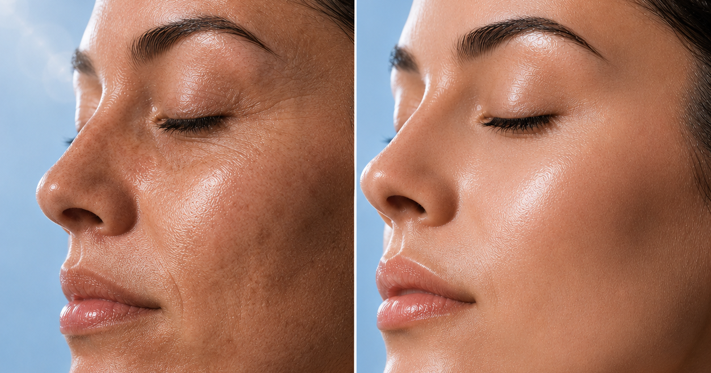
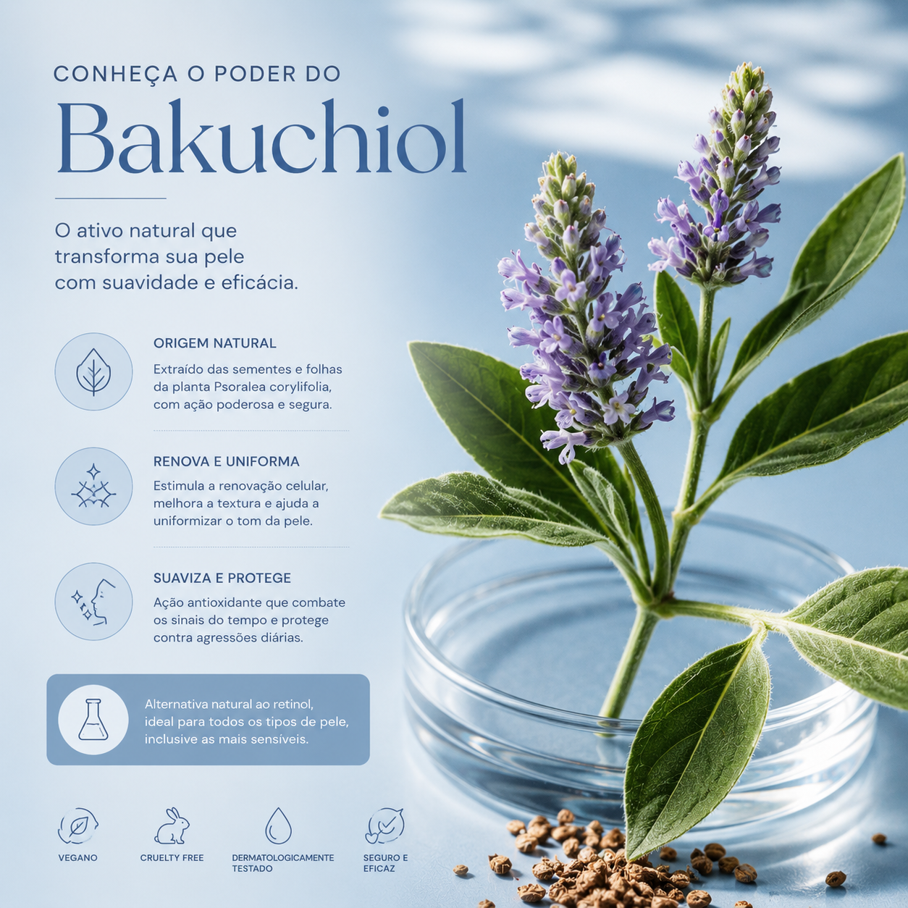
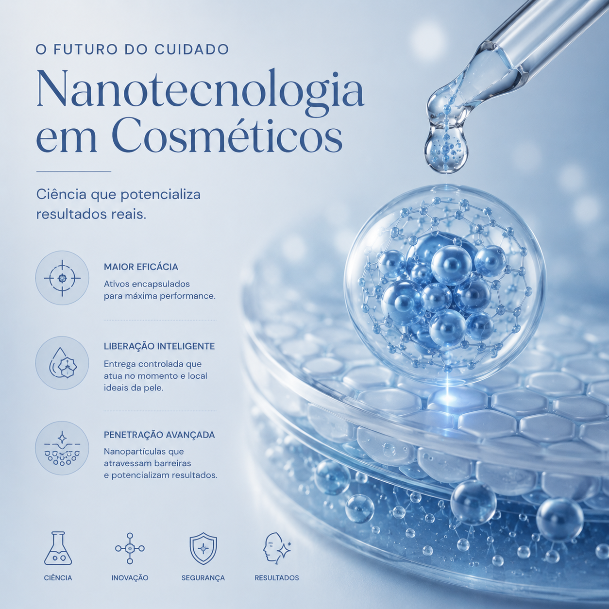
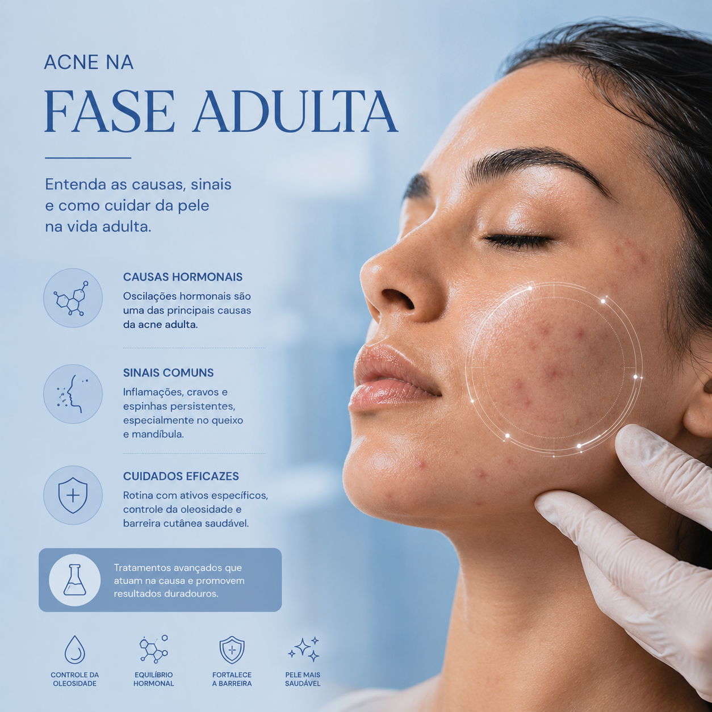
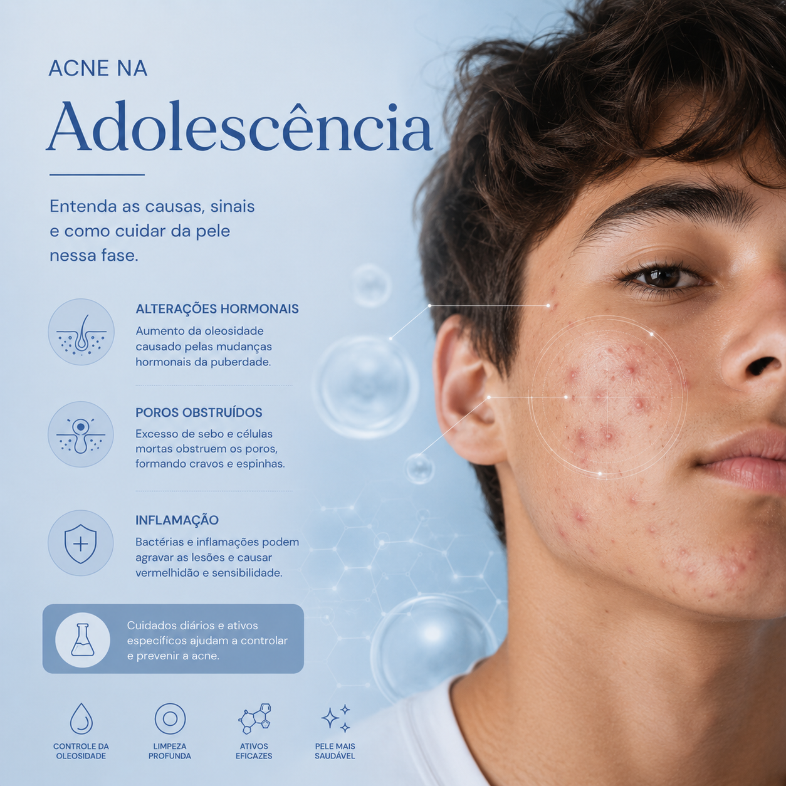
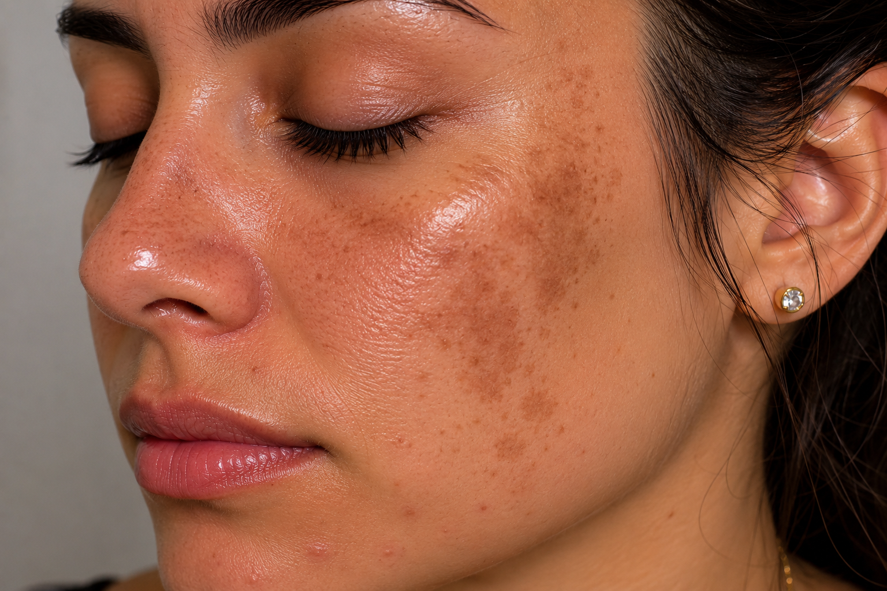
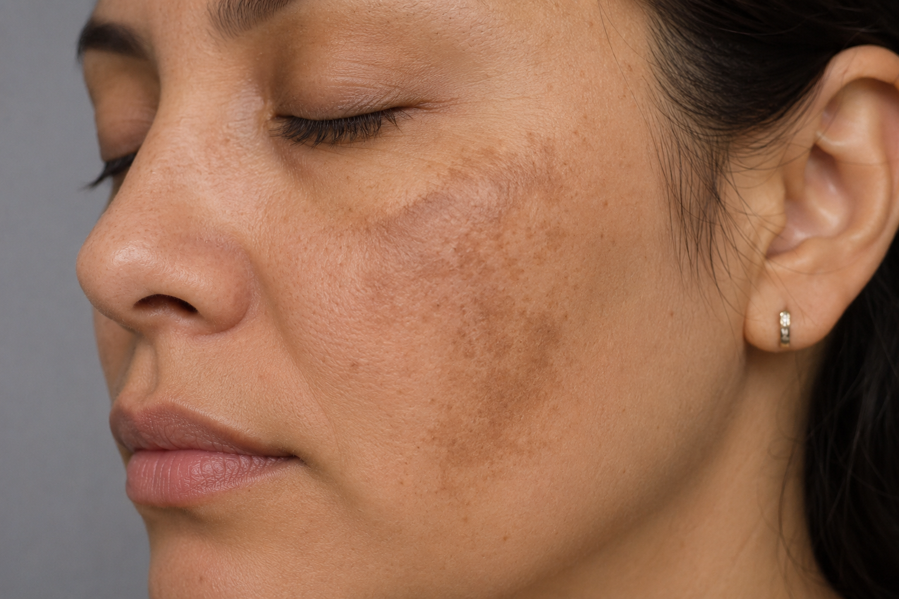

Microagulhamento
Como o microagulhamento estimula colágeno e auxilia no tratamento da pele, estrias e alopecia.
Ler artigo
Rejuvenescimento Facial
Conheça as principais técnicas utilizadas para estimular firmeza e renovação da pele.
Ler artigo
Bakuchiol
O ativo vegetal comparado ao retinol que vem ganhando espaço na estética regenerativa.
Ler artigoResveratrol
Entenda o papel antioxidante do resveratrol na pele e na regeneração celular.
Ler artigo
Nanotecnologia na Cosmética
Como a nanotecnologia aumenta a absorção dos ativos e potencializa resultados.
Ler artigo
Acne na Fase Adulta
Fatores hormonais, alimentação, estresse e estratégias para controle da acne.
Ler artigo
Cicatriz de Acne
Causas, tipos e tratamentos regenerativos para melhorar a textura da pele.
Ler artigo
